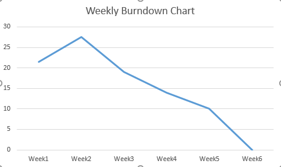
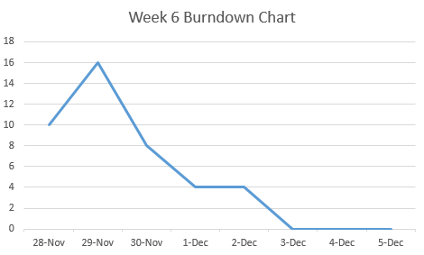

Final Report - Dark-Snow
Created: Dec 1st, Last Edited: Dec 5th
- Anudeep Yegireddi Anudeep.yegireddi@yale.edu
- Siddharth Jain siddharthsunil.jain@yale.edu
- Gene Sussman gene.sussman@yale.edu
- Daisy Cao daisy.Cao@yale.edu
Links:

Burn Down Chart
 Completed Stories
When connecting all the pages, the CAS login did not work again. To make sure the system is running, we then added back the classical authentication. We experienced more difficulties than we thought because of the unique environment, it is even more complex as we have two Mac users and two windows users. It also bring us problems because of python syntax and spending lots of time on debugging.
Final Sprint Summary
When connecting all the pages, the CAS login did not work again on Django. To make sure the system is running, we then added back the classical authentication. We experienced more difficulties than we thought because of the environment, it is even more complex as we have two Mac users and two windows users. The python syntax details also brought difficulties, and we spent lots of time on debugging.
On Tuesday, we realized we need to add back the classical authentication, so the story points increased. We also have some problems with Django, so most of the time we are back and forth debugging errors.
On Wednesday afternoon, we booked a room and worked together to deal with the Django template inheritance and the details. Finally, with hours of work, we got the overall “skeleton” templates running.
Product Backlog
We wanted to create a version of Quora for Yale SOM that SOM students can submit questions and others in the community can answer them. The essential functions were completed.
However, some features were not completed successfully because of technical barriers and stretch goals were not finished because of time limitation.
We wanted to use authentication via CAS and already spent lots of time on it, but then we finally realized it does not work well on Django.
We wanted to have more details to the forum system but did not expect the difficulties on the environment set-up and debugging.
We wanted to have points system as a stretch goal to gamify the SOM Quora. We once planned to design a comprehensive algorithm to optimize the posts order by tagging, upvote/downvote and referral data and host a backend data analysis system. We wanted to have optional Facebook integration once we have the basic authentication. We also designed an innovation to bring the online community to offline networking by Evans Hall coffee sharing.
One learning for this is using unfamiliar coding language might bring more difficulties than expected and bring frustration either. We should plan buffer time for a new framework. But we did learn a lot of Python and Django.
Reflection
We spent too much time discussing the scope of the project and stretch goals; we should start coding earlier.
We planned to use several tools at first, such as Eclipse/Jira/MongoDB/Postgres and spent too much time on learning the tools.
We did not expect to spend too much time on the environment set-up and synchronization between Mac and Windows users.
We did not use user stories but split them into technical pieces, then they were not comprehensive enough as we expected, especially most of the time we worked remotely. User stories are better way to organize the tasks.
It is hard to get all pages work together and most of the time we are debugging than writing the codes.
During the past 6 weeks, we’ve learnt how to use the popular tools: python, Django, CAS integration(we tried), Github, HTML/CSS, and also the software management, the scrum management, the real difficulties we may experience in a product development project.